Pendidikan Teknologi Informasi
Universitas Slamet Riyadi Surakarta
Beranda
Visi Misi
Sasaran
Profil Saya
Pendidikan Teknologi Informasi
Lulusan Program Studi PTI menjadi guru TIK yang kompeten dan tenaga kependidikan yang kompetitif dan
berwawasan global dibidang TIK serta tenaga ahli TIK yang memiliki integritas kepribadian sesuai dengan norma dan etika profesi